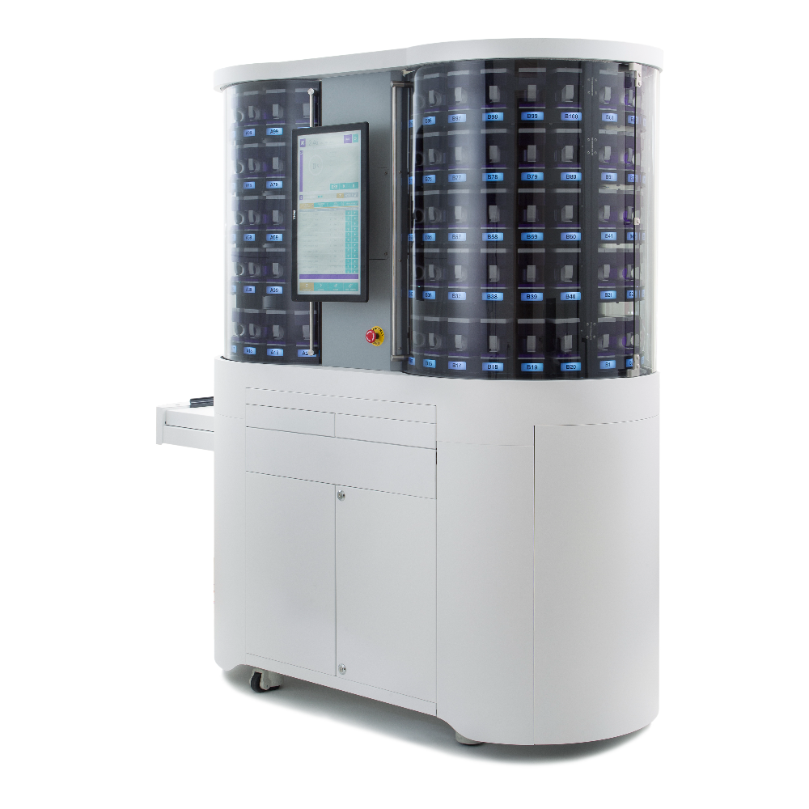

Component Assembly Technician | Final Assembly Technician | FAT Tester
VDL Assembly · February 2026 – Present
Professional Overview
At VDL Assembly, I have progressed through three technical roles within a relatively short period, starting as a Component Assembly Technician, advancing to Final Assembly Technician, and subsequently taking on the responsibilities of a FAT Tester (Factory Acceptance Testing).
Throughout this progression, I have gained extensive hands-on experience with the VBM (VandenBrink Blister Machine), an automated blister card packaging system. My responsibilities cover multiple stages of the machine's production process, from precision component assembly and electrical wiring to final machine integration, mechanical alignment, system configuration, and functional testing.
In my current role as a FAT Tester, I combine mechanical, electrical, and software-related knowledge to configure, test, and troubleshoot the VBM machine. My work includes low-voltage electrical testing, basic programming, database connection configuration, precision adjustments, and diagnosing complex technical issues to ensure that all components function correctly together.

Areas of Expertise
Explore the different technical responsibilities within my position.
Component Assembly Technician
Role Description
As a Component Assembly Technician, I am responsible for building and assembling various technical components used in healthcare technology. My work combines mechanical assembly, electrical components, and precision engineering. Accuracy and attention to detail are essential to ensure that individual components meet the required technical specifications and can be integrated into larger systems.
Key Responsibilities
- Assemble mechanical, electrical, and precision-engineered components.
- Work with technical components used in healthcare equipment and systems.
- Perform detailed assembly tasks requiring accuracy and technical understanding.
- Ensure proper positioning and integration of individual components.
- Identify and resolve assembly-related technical issues.
- Maintain high standards of precision and component quality.
Technical Skills
Final Assembly Technician
Role Description
As a Final Assembly Technician at VDL Assembly, I am responsible for the final assembly and integration of the VBM (VandenBrink Blister Machine), an automated blister card packaging system.
My responsibilities involve assembling and integrating mechanical, electrical, and precision-engineered components into a complete machine. A significant part of this process includes installing, routing, connecting, and organizing electrical wiring to ensure that the machine's various components are correctly interconnected.
In addition to electrical assembly, I perform precise mechanical adjustments, align interconnected components, and fine-tune assemblies to ensure proper positioning and functionality.
Throughout the assembly process, I identify and resolve mechanical and electrical assembly issues, ensuring that the machine is correctly assembled and prepared for subsequent functional testing and Factory Acceptance Testing (FAT).
Key Responsibilities
- Perform the final mechanical and electrical assembly of the VBM automated blister card packaging machine.
- Follow detailed assembly instructions and procedures provided in the assembly manual.
- Integrate mechanical, electrical, and precision-engineered components into a complete machine.
- Install, route, connect, and organize electrical wiring between machine components.
- Perform precise mechanical alignment and adjustments to ensure accurate component positioning.
- Fine-tune interconnected components to achieve proper mechanical interaction and functionality.
- Identify and resolve mechanical and electrical assembly issues.
- Verify that components are correctly assembled and installed according to the assembly manual.
- Prepare the completed machine for functional testing and Factory Acceptance Testing (FAT).
Technical Skills
FAT Tester
Role Description
As a FAT Tester, I am responsible for performing technical inspections, functional tests, system adjustments, and troubleshooting activities on assembled technical systems. My work combines mechanical, electrical, and software-related disciplines. I conduct low-voltage electrical testing, perform basic programming and configuration adjustments, modify database connection settings, and precisely align interconnected components. A major part of my responsibilities involves diagnosing complex technical problems, identifying their underlying causes, implementing corrective solutions, and verifying that the complete system functions correctly.
Key Responsibilities
- Perform Factory Acceptance Testing (FAT) to verify the functionality of assembled technical systems.
- Conduct low-voltage electrical tests to evaluate electrical functionality and identify potential faults.
- Perform basic programming and adjust system configurations to support correct system operation.
- Modify database connection settings and investigate connectivity-related issues.
- Perform precise mechanical adjustments to ensure accurate alignment between interconnected components.
- Analyze interactions between mechanical, electrical, and software-related components.
- Diagnose technical malfunctions and identify the underlying causes of system failures.
- Apply structured troubleshooting methods to isolate mechanical, electrical, and configuration-related problems.
- Implement corrective adjustments and technical solutions based on diagnostic findings.
- Perform additional functional testing after adjustments to verify that identified problems have been resolved.
- Investigate complex technical issues involving multiple interacting components and system configurations.
- Combine mechanical knowledge, electrical diagnostics, and software configuration skills to resolve multidisciplinary technical challenges.